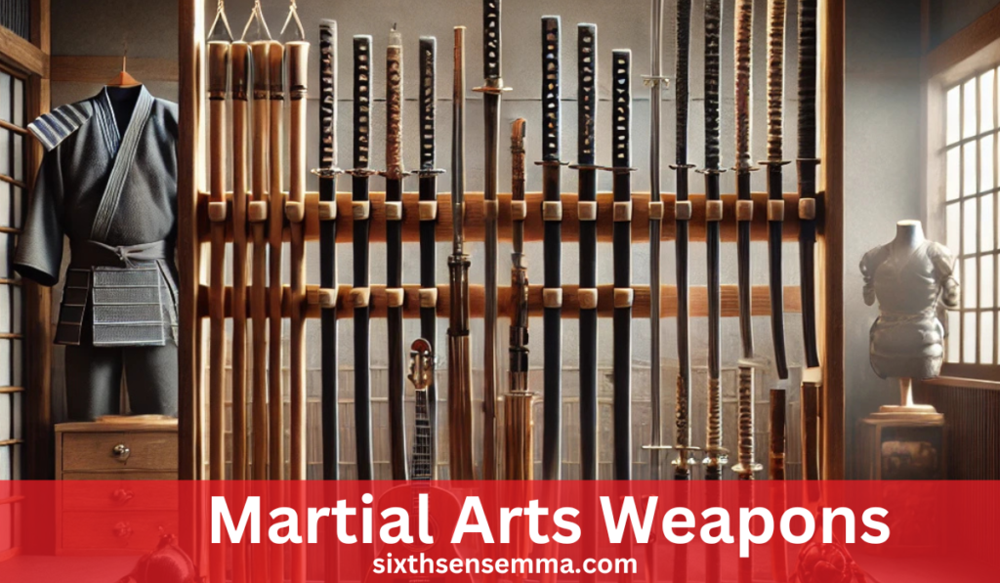
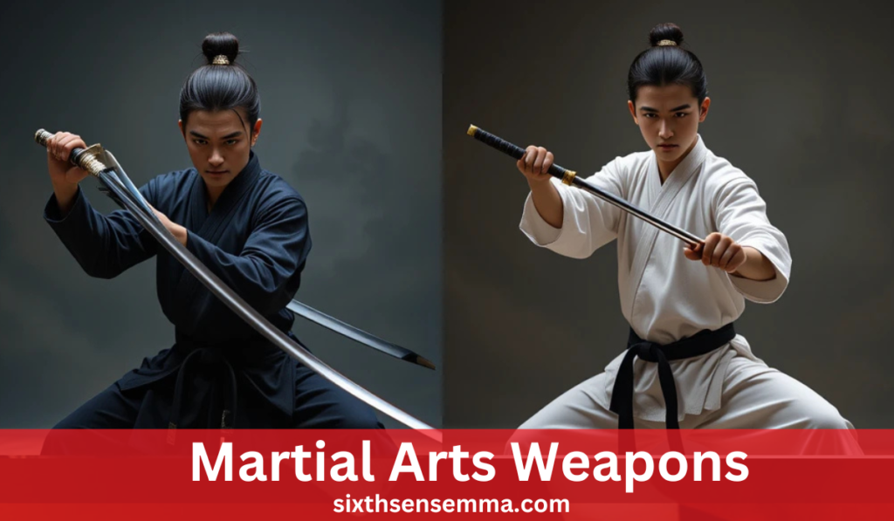
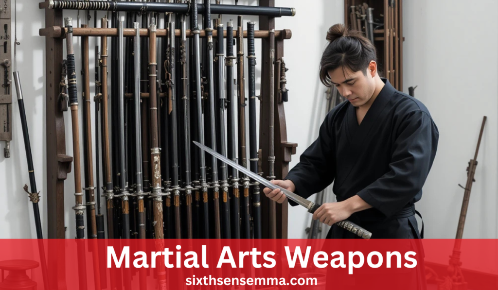

Martial Arts Weapons: Master Deadly Types & Training

Martial Arts Weapons are more than just tools of combat; they carry significant historical and cultural meaning. In various martial arts disciplines, weapons play a crucial role in both offensive and defensive strategies. Each martial art incorporates unique weapons that serve distinct purposes, from self -defense to competition or traditional practice.
What are the most common martial arts weapons?
The most common martial arts weapons include the katana (sword) in Japanese arts like Kenjutsu, the bo staff in various Asian martial arts, nunchaku in Karate and Kung Fu, sais in Ninjutsu, and the kris (dagger) in Silat. These weapons are integral to the training and techniques in their respective martial arts styles.
Understanding Martial Arts Weapons
Overview of Martial Arts Weapons: Historical Context and Diverse Types Across Cultures
Martial arts weapons are deeply rooted in history, reflecting the cultural, regional, and philosophical influences of their time. Different regions developed their unique tools of combat based on available resources, fighting styles, and specific combat needs.
Detailed Descriptions of Weapon Types: Their Applications in Offense, Defense, and Self-Defense
Each martial arts weapon has its own unique application in combat. Here’s a breakdown of some widely known weapons and how they are used:
Katana (Sword): The katana is revered for its sharpness and precision, often used in Kenjutsu or Kendo.
Bo Staff: A long wooden staff used in various martial arts like Karate, Kung Fu, and Kali.
Nunchaku: A traditional weapon in Karate and Kung Fu, the nunchaku consists of two sticks connected by a chain or rope.
Sai: A traditional weapon in Ninjutsu and Karate, the sai is a short, pointed trident-like weapon. While it is primarily used for offensive strikes to puncture or disarm, it also plays a significant role in defense, where it can be used to trap, block, or deflect incoming strikes.
Choosing the Right Weapon: Guidance on Selecting a Weapon Suited to Individual Needs and Martial Arts Styles
Choosing the right weapon in martial arts depends on multiple factors, including the practitioner’s goals, body type, and preferred martial arts style:
Martial Art Style: Each martial arts discipline typically uses specific weapons, and the choice often comes down to the style itself.
Physical Considerations: The right weapon also depends on an individual’s physical attributes. Those who are more agile and quick may find the nunchaku or sai more suitable, as they require dexterity and speed.
Training Goals: If a practitioner is primarily focused on fitness and self-defense, weapons like the bo staff or nunchaku may provide a great combination of conditioning and practical applications.
History and Evolution of Martial Arts Weapons
Martial arts weapons have interestingly changed through the history, as from daily tools they became specialized instruments used in combat, for self-defense, and for training in traditional martial arts. Though varied, the development of these weapons arose from certain historical conditions like localized conflicts, a need to defend oneself, and a desire to refine certain combat techniques and martial systems.
Table: Evolution of Martial Arts Weapons
| Weapon | Origin/History | Early Use | Modern Martial Art Use | Cultural/Philosophical Significance |
|---|---|---|---|---|
| Bo Staff | Ancient Japan | Walking stick, peasant weapon | Karate, Kung Fu, Aikido | Symbol of discipline, control, and defense |
| Katana | Japan, Feudal period | Sword used by samurai in battle | Kenjutsu, Kendo, Iaido | Symbol of the samurai, honor, and precision |
| Nunchaku | Okinawa, Japan | Agricultural tool (rice flail) | Karate, Kung Fu, Tae Kwon Do | Agility, fluidity, and adaptability |
| Spear | Ancient China, Greece, Rome | Hunting, battlefield weapon | Kung Fu, Jujutsu, Kali | Long-range combat, precision, and power |
| Kris | Southeast Asia (Indonesia, Malaysia) | Dagger for close combat | Silat, Kali | Spiritual significance, power, and agility |
| Sai | Okinawa, Japan | Weapon for close-quarters defense | Ninjutsu, Karate | Defensive, control over opponent’s weapon |
| Sickle | Ancient China, Southeast Asia | Farming tool, used for cutting | Kung Fu, Silat | Sharpness, swift movements, and flexibility |
Classification of Martial Arts Weapons
Martial arts weapons can be categorized into several groups based on their physical characteristics, which significantly influence their application in combat, defense, and training. Understanding these classifications helps practitioners select the right weapon for their style, training goals, and combat situations.
Blunt Weapons
Blunt weapons are designed to deliver forceful impact without the need for cutting edges. These weapons are used to incapacitate an opponent, often by targeting vital points like joints, the head, or the torso.
Projectile Weapons
Projectile weapons are designed to launch or throw objects at a target, typically from a distance. These weapons are effective in keeping opponents at bay and creating openings for more direct attacks. The skill required to use projectile weapons involves accuracy, speed, and an understanding of timing.
Bladed Weapons
Bladed weapons, including swords, daggers, and knives, assume vital importance in several martial arts that have a rich history of precision and lethality. Such weapons are devised to cut, slash, or thrust, and their sharp edges make them effective delivery systems for fast, powerful, and direct blows. They are not recommended for ceremonial dispatches outside of martial art tournaments, such as offensive and defensive maneuvers like parrying and blocking, seen in arts like Kendo and Kenjutsu.
Impact Weapons
Impact weapons, such as staffs, nunchaku, and clubs, are designed to deliver powerful strikes and blocks during combat. These weapons rely on their weight and momentum to produce forceful blows, often targeting an opponent’s body or joints to incapacitate them. In styles like Kung Fu and Karate, impact weapons are integral to both offensive and defensive techniques. Staffs provide reach and leverage, while nunchaku and clubs emphasize speed and agility.
Flexible Weapons
Flexible weapons, like chains, ropes, and flails, are designed in such a manner that their fluidity and adaptability allow for subterfuge and control of opponents. While rigid weapons move along a predetermined path, flexible weapons allow for more random movement, thus giving practitioners the ability to entangle, choke, or disarm moves. Possibly the greatest advantage of flexible weapons is that they can be used offensively or defensively, even from a distance, opening for surprise attacks or tactical disarms. For instance, the chain can be swung to trap an opponent’s limbs, while the flail can strike with its swinging head.
Detailed Examination of Select Martial Arts Weapons

Katana (Japanese Sword)
The katana, an iconic Japanese sword, is deeply intertwined with the country’s history, especially within the Samurai tradition. It symbolizes not just a weapon of war, but also an extension of the Samurai’s spirit and code of honor. Historically, the katana was crafted with meticulous attention to detail, featuring a curved blade that is exceptionally sharp and well-balanced, making it ideal for quick, precise strikes. Techniques associated with the katana emphasize its drawing speed (Iaijutsu) and cutting precision. The Katana’s drawing technique, or battōjutsu, is designed to allow practitioners to quickly draw and cut in one fluid motion, often executing strikes with extreme precision.
Bo Staff
The bo staff is a traditional, long wooden staff used across various martial arts, including Karate, Kung Fu, Brazilian Jiu-Jitsu, and Aikido. Known for its versatility, the bo staff can be wielded in both offensive and defensive techniques, making it a versatile training tool in many styles. It is often used to execute strikes, blocks, parries, and disarms, allowing for a wide range of movements. Training with the bo staff helps develop fluid movements, control, and adaptability, as practitioners learn to handle a long weapon with precision and ease.
Nunchaku
Nunchaku, a pair of two sticks bound together by rope or chain, is one of the best-known and recognized flexible weapons in martial arts, often regarded as having its roots from the popularization by media owing to martial arts icons like Bruce Lee. Originally, it was a farming tool that eventually became a weapon used in striking, trapping, and disarming opponents in karate. They permitted quick, flowing movements and such is an extremely dynamic weapon that just pulls off rapid and multiple strikes. Training with nunchaku enhances speed, coordination, and agility because the weapon permits a martial artist to develop effective brief and exact control over the weapon.
Training with Martial Arts Weapons
Safety Measures
When practicing martial arts with weapons, safety is paramount to prevent injury and ensure effective learning.
Supervision and Instruction:
Training under the guidance of a qualified instructor is essential, especially when dealing with weapons. A skilled instructor ensures that proper techniques are followed, significantly reducing the risk of accidental injury.
Protective Gear:
Utilizing proper protective gear is critical when practicing with weapons, even during controlled training. Pads, gloves, helmets, and shin guards are commonly used in martial arts to protect sensitive areas like the head, hands, and legs. When sparring or performing application drills, protective gear helps minimize the impact of accidental strikes.
Skill Progression
Mastering weapons in martial arts requires a structured approach to skill progression, moving from simple techniques to more complex maneuvers.
Starting with Basics:
Every martial artist begins their weapons training with basic forms and movements. This foundational phase is crucial for developing good technique, understanding the weapon’s balance, and mastering its control. Beginners start by learning the basic grips, stances, and strikes, gradually building muscle memory for each movement.
Application Drills:
Once the basics are understood, sparring drills and application exercises help students practice weapon handling in more realistic scenarios. Application drills involve using weapons in dynamic situations, where practitioners react to opponents’ attacks and counter them with appropriate techniques.
Conditioning and Strength Training
Effective weapon handling demands physical conditioning, particularly in strength and flexibility, to handle weapons efficiently and without strain.
Grip Strength:
A crucial aspect of training with weapons is developing strong grip strength. Weapons such as the bo staff, katana, or nunchaku require a firm yet controlled grasp. Practicing specific grip-strengthening exercises for the fingers, wrists, and forearms helps maintain control over the weapon while minimizing fatigue.
Flexibility Routines:
Flexibility plays a key role in weapon handling, as it allows practitioners to move their arms, wrists, and entire body fluidly, increasing the range of motion needed to execute advanced techniques. Incorporating stretching routines and dynamic warm-ups helps improve joint mobility, particularly in the shoulders, wrists, and hips, which are crucial for weapon movement.
Selecting the Right Martial Arts Weapon
Assessing Personal Objectives
When selecting a weapon for martial arts, it is essential to assess your personal objectives. Your goals and training intentions will greatly influence the type of weapon that best suits your needs.
Goals:
The primary factor in choosing the right weapon is understanding what you aim to achieve from your martial arts practice. If your goal is self-defense, you may want to focus on weapons that are easy to carry and quick to use, such as the knife or nunchaku.
Understanding Weapon Specifications
Knowing the technical specifications of a weapon is critical for selecting one that meets your needs and enhances your training experience.
Material Composition:
The material from which a weapon is made determines its durability, weight, and overall performance. Metal weapons, such as swords, katanas, and knives, are usually heavier and stronger, making them suitable for practical combat situations, but they require significant care to maintain.
Consulting Instructors and Experts
Selecting the right weapon can be a complex process, which is why it’s beneficial to seek advice from experienced martial artists and weapon experts.
Expert Advice:
Consulting with a qualified instructor or attending workshops is one of the best ways to gain valuable insight into the weapon that suits your needs. Instructors can provide personalized recommendations based on your physical attributes, training goals, and skill level.
Maintenance and Care of Martial Arts Weapons

Cleaning and Storage
The cleaning and storage of martial arts weapons are essential for maintaining their longevity, effectiveness, and safety during training. Proper care prevents deterioration and ensures that weapons continue to perform at their best.
Regular Cleaning:
Keeping your weapons clean is essential for maintaining their condition. Dust, dirt, and moisture can all degrade the weapon’s materials, leading to rust on metal blades or splitting in wooden shafts.
Inspection and Repair
To ensure your weapons remain safe and functional, routine inspections and repairs are necessary. These regular checks help identify wear and tear before they become a serious issue, reducing the risk of accidents during training.
Routine Checks:
Regular inspections should be part of your training routine to ensure your weapon remains in optimal condition. For bladed weapons like katanas or swords, check the sharpness of the blade and look for signs of chipping or dulling.
Conclusion
Martial arts weapons are far more than mere instruments of combat—they represent the rich heritage, philosophy, and discipline embedded in martial arts traditions across cultures. Each weapon, from the razor-sharp katana to the fluid and adaptable bo staff, tells a story of evolution, purpose, and mastery. These weapons have been forged not only for battle but also for the development of precision, control, and mental fortitude, allowing practitioners to cultivate both physical and spirituality strength.
FAQ's
The best martial art for beginners depends on personal goals and preferences. Brazilian Jiu-Jitsu (BJJ) is favored for its focus on technique, making it accessible for all. Karate is also a strong choice, emphasizing basic movements and self-discipline. It’s beneficial for beginners to try different classes to find what suits them best.
There is no age limit for starting martial arts! People of all ages can benefit from training. Many schools offer adult classes that cater to newcomers, allowing them to learn at their own pace and enjoy the physical and mental benefits of martial arts.
The cost of martial arts training varies by school, location, and class types. Many schools offer flexible pricing, including monthly memberships or per-class fees. It’s wise to explore different options to find a budget-friendly school that meets your needs.
Participation costs typically range from $100 to $150 per month for memberships, with per-class rates between $15 and $30. Annual memberships may be available for $800 to $1,200, often providing savings. Additionally, consider any extra fees for uniforms and equipment.
For your first day, wear comfortable athletic clothing. Most schools will provide a uniform (like a gi) for you to wear once you enroll, but you want to be ready to move in whatever you choose! Just check with the school beforehand to see if they have any specific requirements.
The time it takes to earn a belt varies widely based on the martial art and your dedication. Generally, it can range from 3 months to several years. Factors influencing this timeline include attendance, effort, and the specific belt progression system of the style you are learning.
Absolutely! Martial arts classes are intended for all fitness levels. Many schools offer beginner programs that help you gradually build your strength and flexibility, so don’t worry if you’re starting from scratch!
Train with us in Coppell
The first class is free. Shorts, a t-shirt and a water bottle. We lend the rest.
Book a free class